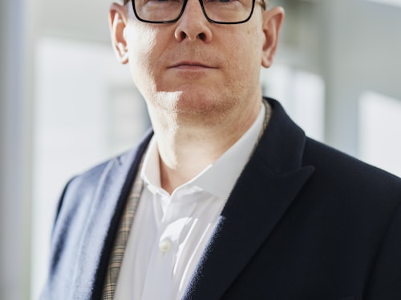

Business
N. Franck
CEO, TechHub Africa
Sénégal
48 experts venus de 12 pays africains partagent leur vision et leur expertise sur scène.
CEO, TechHub Africa
Sénégal

Lead AI Engineer, DataAfrik
Sénégal

VC Partner, Savanna Fund
Sénégal

UX Director, DesignAfrika
Sénégal

Chief Data Officer, Maghreb Analytics
Sénégal

Fondatrice, AgriTech Kenya
Sénégal

Design Lead, Baobab Studio
Sénégal

ML Engineer, Lagos AI Lab
Sénégal
Data Scientist, Accra Insights
Sénégal